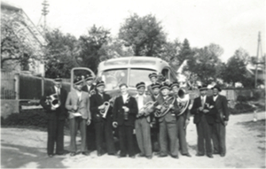

Chronik
Einst Blasmusik in Groß Haselbach
1876 Gründung
Im Jahre 1876 wurde in Gr. Haselbach ein Kameradschaftsverein gegründet. Dieser setzte sich aus zwei Privatkapellen zusammen. Vorerst die Kapelle Hofbauer und dann die Kapelle Flügerl. Namensgeber und Leiter der ersten bekannten Kapelle im Bereich von Gr. Haselbach war Johann Flügerl. Über seine Kapelle ist nur wenig bekannt. Die Musikkapelle Flügerl hatte meist um die 10 Musiker. In den Kriegsjahren wurden in kleiner Besetzung, oft 6-8 Musiker, die Requien für die Kriegsgefallenen gespielt.
Muikkapelle Flügerl (v.l.sitzend) Josef Schuh, Eduard Berger, Kpm. Johann Flügerl, Anton Hobek, Karl Elsigan (stehend) Hirnschall, Scheidl, Dominik Hirschall, Ferdinand Kletzl, Johann Grassauer, Böhm, Wais
1924 Gründung Burschenvereinsmusik
Im Jahre 1924 wurde die so genannte Burschenvereinsmusik gegründet, die bis 1938 bestand. Die Instrumente wurden vom Burschenverein angeschafft und die Finanzierung erfolgte durch die Spielerträge der Musiker, denen nie etwas ausbezahlt wurde. Die Kapelle hatte etwa 14-16 Mitglieder. Ausgedrückt wurde zu sämtlichen kirchlichen Anlässen im Ort, wobei zu manchen Veranstaltungen zwei Kapellen aktiv waren, eben die Burschenvereinskapelle und die Kapelle Flügerl. Das Jahr 1938 brachte das Ende der jungen Kapelle. Durch den Weltkrieg konnte an eine Wiederaufnahme des Spielbetriebes nicht mehr gedacht werden.
(v.l.) Franz Hofbauer, Kpm. Josef Döller, darüber Richard Bauer, Eduard Marksteiner, Karl Hirnschall, Johann Gari, Eduard Binder, Johann Hofbauer
1945 Ortsmusikkapelle Gr. Haselbach
Als Nachfolgekapelle für die Kapelle Flügerl und die Burschenvereinskapelle entstand 1945 die so genannte Ortsmusikkapelle Gr. Haselbach. Als Kapellmeister war Karl Elsigan sen. tätig. Wer die Kriegsereignisse überstanden hatte und musizieren wollte, fand sich in dieser Kapelle ein. Von den damals mitwirkenden Musikern sind bekannt: Kpm. Karl Elsigan, Florian Poinstingl, Karl Hirnschall, Franz Stummer, Johann Gari, Johann Ruth, Richard Bauer und andere Musiker aus Echsenbach.
(v.l.stehend) Otto Poindl, Franz Bauer, Emmerich Elsigan, Karl Hofbauer, Johann Altrichter, Richard Bauer, Franz Brantner, Johann Ruth (sitzend) Karl Elsigan, August Bittermann, Alfred Höfler, Alois Krammer, Adolf Franta, Franz Höfler
(v.l.) Karl Elsigan, Franz Bauer, Alfred Höfler, Karl Hofbauer, Adolf Franta, Franz Höfler, Emmerich Elsigan, Franz Brantner, Otto Poindl, Johann Altrichter, Josef Döller
1950
Als 1950 Vater Elsigan verstarb übernahm dessen Sohn die Leitung der Kapelle. An neuen Musikern kamen Emmerich Elsigan, Franz Mülleder, Franz Marchsteiner und Franz Höfler hinzu. Die Kapelle musizierte bis in die 80er Jahre.
(v.l.) Karl Elsigan, Ferdinand Breit, Karl Kandera, Karl Hofbauer, Alois Marchsteiner, Franz Bauer, Emmerich Elsigan, Alois Krammer, Franz Marchsteiner
1987 - Die Neugründung des MV Groß Haselbach
Die tatkräftige Initiative des Pfarrers von Groß Haselbach, Monsignore Anton Schraivogl, des Altmusikers Karl Hofbauer und die finanzielle Unterstützung durch Frau Anna Hörmann ermöglichte es, dass am 7.Februar 1987 die konstituierte Sitzung des Vereins stattfand.
An dieser Gründungssitzung nahmen 32 Mitglieder, darunter der Bgm. DI Winkelhofer, teil. Zum Obmann wurde Pfarrer Anton Schraivogl, zum Kapellmeister Ferdinand Breit gewählt. 25 aktive MusikerInnen übten zuerst im alten Gemeindehaus. Aus Platzmangel wurde bald in den Pfarrsaal übersiedelt.
Nach 2 Jahren wurde für die Musikkapelle eine Tracht angeschafft: Schwarze Hose, schwarz-rot kariertes Sakko, schwarzer Hut mit roter Kordel. 1992 wurden die Musikerinnen eingekleidet: schwarzes Dirndl mit viollet-grün-schwarz kariertem Oberteil, rote und blaue Schürze.
Die immer größer werdende Beliebtheit des MV Gr. Haselbach zeigt sich an der steigenden Anzahl verschiedensten Ausrückungen und zwar von 6 im Jahr 1987 (also schon im Gründungsjahr!) auf ca. 50 im Jahr 2004. Von kirchlichen Festen bis zu Gemeindefeiern, von Geburtstagsständchen bis zu Feuerwehrfesten, von Sonnwendfeiern bis zu diversen Reisen (Polenreise mit Pfarrer Mag. Gorny, Schifahren in Schladming, Abtenau,…., Reise nach Nürnberg und jüngst die Reise nach Bad Vigaun). Außerdem werden pro Jahr ca. 60 Musikproben und zusätzliche Registerproben abgehalten mit derzeit 37 aktiven Musikerinnen und Musikern.
Nächster Auftritt
Neujahrsempfang Gemeinde Schwarzenau
ORT: Schwarzenau
Wann: 15.01.2016
Zeit: 20:00 Uhr
Nächste Probe
Gesamtprobe
ORT: Musikhaus Groß Haselbach
Wann: 15.01.2016
Zeit: 20:00 Uhr